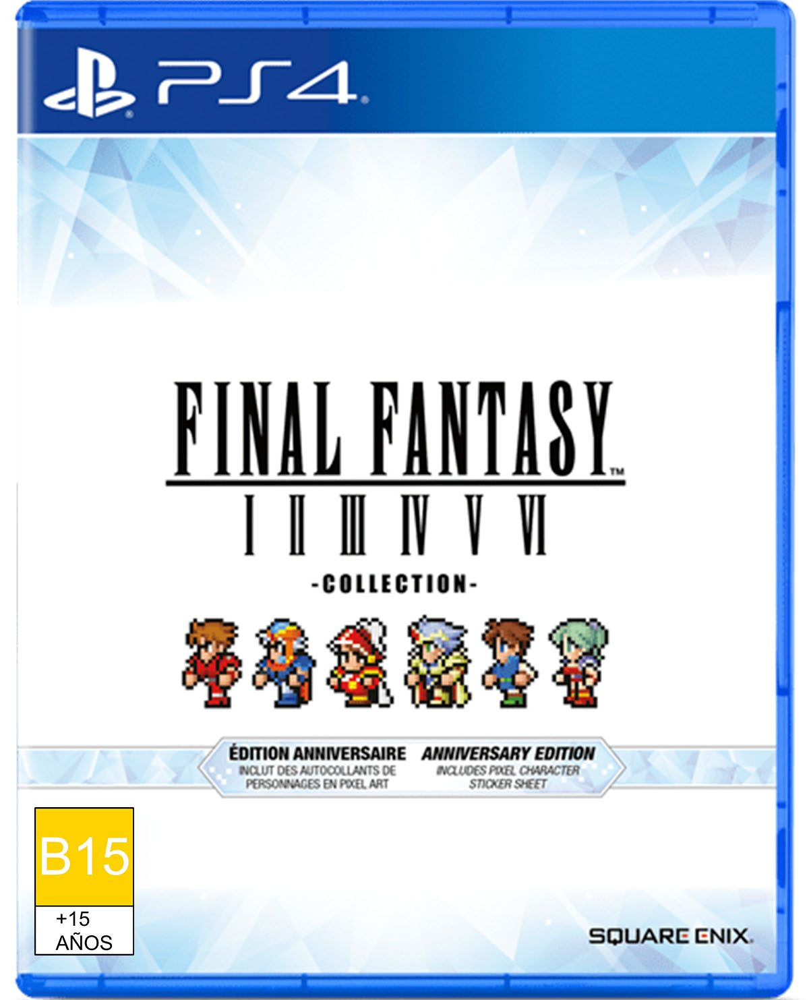
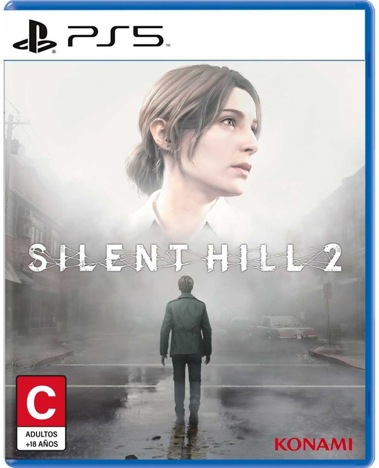
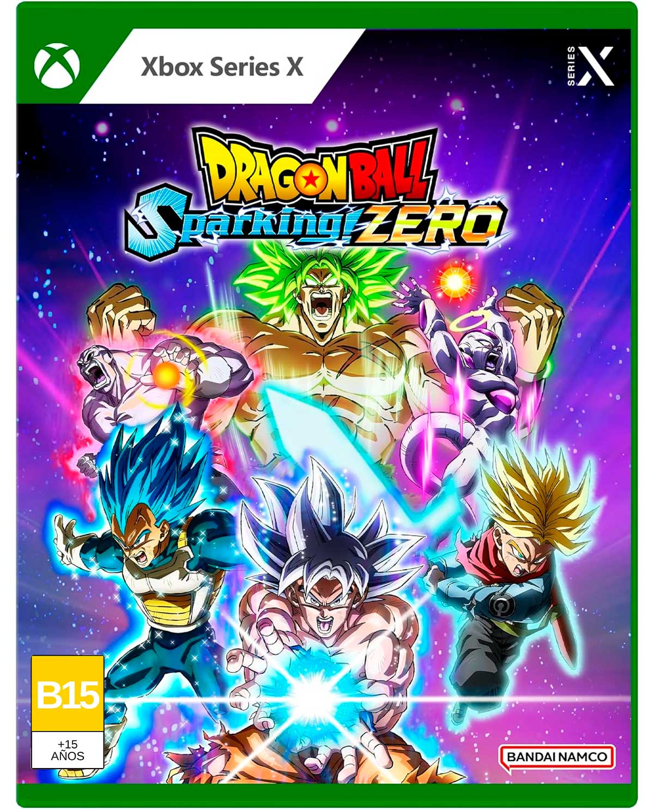

Tras su paso por PC con un lanzamiento escalonado, la colección Final Fantasy Pixel Remaster –o con los juegos disponibles de manera individual- llega a PlayStation 4 y Nintendo Switch. Con seis juegos de 8 y 16 bits recopilados, aspecto gráfico rehecho pero fiel a los originales más diversos cambios en sonido o comodidad, Square Enix lo considera la versión definitiva de estos clásicos, además de ser una oportunidad inmejorable para descubrir el origen de una de las grandes sagas de rol que todavía está de plena actualidad –Final Fantasy XVI se estrena el 22 de junio-.

Silent Hill 2 Remake nos lleva de vuelta a la fatídica historia de James Sunderland, un tipo promedio que recibe una carta de su esposa en la que menciona que lo espera en Silent Hill, su lugar favorito. El detalle es que ella falleció 3 años antes. No olvidemos que la saga de terror de Konami no tiene finales felices, es una tragedia en toda la extensión de la palabra; el concepto general es el horror psicológico, pero en el caso del segundo juego la perspectiva fue diferente: no se trata de la ciudad y el culto, sino del lugar como expresión del infierno que vive cada personaje con emociones como el duelo, la culpa, la depresión, el suicidio, el odio, la lujuria, etc.

Lo más destacado de DRAGON BALL: Sparking! ZERO es su modo Episodio de Batalla, aquí podrás revivir todas las sagas de Dragon Ball Z y Dragon Ball Super desde la perspectiva de Goku, Vegeta, Trunks, Piccolo, Gohan, Goku Black, Freezer y un personaje más que para no darte spoiler, solo diré que hace parte del Torneo del Poder.
Y aunque es muy genial volver a partir por la mitad a Freezer robot, ¿qué pasaría si ese espadazo de Trunks no hubiera funcionado? Este modo de juego cuenta con bifurcaciones en la historia que nos presentan situaciones ajenas a lo visto en el manga/anime. Por ejemplo, Piccolo derrotando a Cell en el torneo, Goku Black cumpliendo su cometido y eliminando a todos los humanos o Goku convirtiéndose en Super Saiyajin en la primera batalla contra Vegeta.
